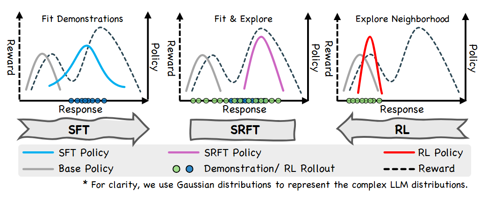
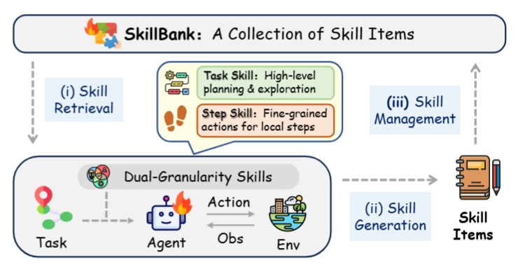
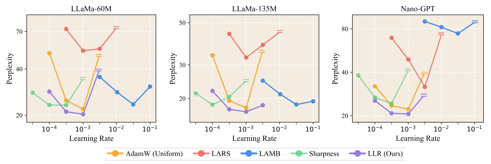
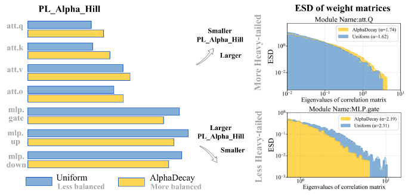
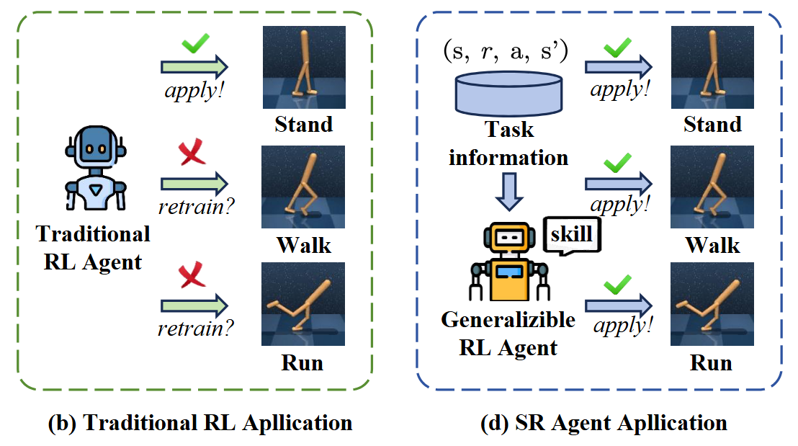
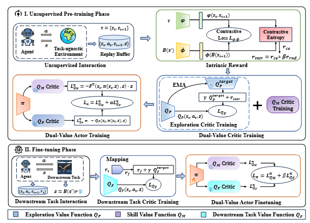
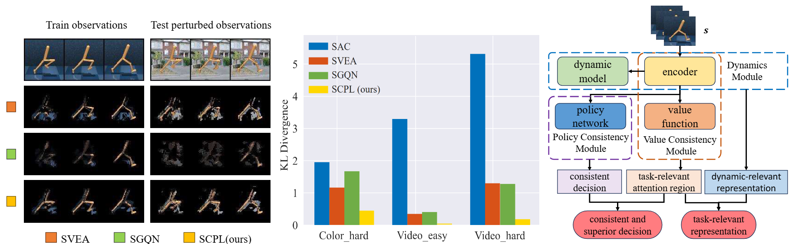
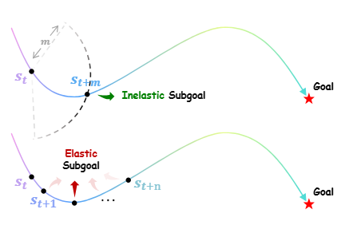

Tu Songjun (凃崧峻)I am a Ph.D. student at the Institute of Automation, Chinese Academy of Sciences (CASIA), supervised by Prof. Dongbin Zhao and Prof. Qichao Zhang. My research interests include large language models and reinforcement learning.
|

|
Biography
Education
2019–2023 B.E. in Automation, Central South University, Changsha, China. Advisor: Wenfeng Hu.
2023–present Ph.D. student in Control Theory and Control Engineering, Institute of Automation, Chinese Academy of Sciences, Beijing, China. Advisors: Dongbin Zhao and Qichao Zhang.
2024–present Research Assistant, Pengcheng Laboratory, Shenzhen, China. Advisor: Xiangyuan Lan.
Publications
Large Language Models
LLM Reasoning
Training stronger LLMs on reasoning tasks.
 |
Yuqian Fu, Tinghong Chen, Jiajun Chai, Xihuai Wang, Songjun Tu, Guojun Yin, Wei Lin, Qichao Zhang, Yuanheng Zhu, Dongbin Zhao
SRFT: A Single-Stage Method with Supervised and Reinforcement Fine-Tuning for Reasoning ICLR, 2026 [Paper] [Code] |
 |
Songjun Tu, Jiahao Lin, Qichao Zhang, Xiangyu Tian, Linjing Li, Xiangyuan Lan, Dongbin Zhao
Learning When to Think: Shaping Adaptive Reasoning in R1-Style Models via Multi-Stage RL NeurIPS, 2025 [Paper] [Code] |
 |
Songjun Tu, Jiahao Lin, Xiangyu Tian, Qichao Zhang, Linjing Li, Yuqian Fu, Nan Xu, Wei He, Xiangyuan Lan, Dongmei Jiang, Dongbin Zhao
Enhancing LLM Reasoning with Iterative DPO: A Comprehensive Empirical Investigation COLM, 2025 [Paper] [Code] |
 |
Songjun Tu, Qichao Zhang, Jingbo Sun, Yuqian Fu, Linjing Li, Xiangyuan Lan, Dongmei Jiang, Yaowei Wang, Dongbin Zhao
Perception-Consistency Multimodal Large Language Models Reasoning via Caption-Regularized Policy Optimization arXiv, 2025.09 [Paper] [Code] |
Agentic RL and Applications
Agent training and applications in different scenarios.
 |
Songjun Tu, Chengdong Xu, Qichao Zhang, Yaocheng Zhang, Xiangyuan Lan, Linjing Li, Dongbin Zhao
Dynamic Dual-Granularity Skill Bank for Agentic RL arXiv, 2026.03 [Paper] [Code] |
 |
Songjun Tu, Yiwen Ma, Jiahao Lin, Qichao Zhang, Xiangyuan Lan, Junfeng Li, Nan Xu, Linjing Li, Dongbin Zhao
PaperAudit-Bench: Benchmarking Error Detection in Research Papers for Critical Automated Peer Review arXiv, 2026.01 [This work is deployed in the Paper Review of S1-Literature Science-One (磐石).] [Paper] [Code] |
Others
Covers topics such as LLM pretraining, etc.
 |
Di He, Songjun Tu, Keyu Wang, Lu Yin, Shiwei Liu
One LR Doesn’t Fit All: Heavy-Tail Guided Layerwise Learning Rates for LLMs ICLR DeLTa Workshop, 2026 [Paper] [Code] |
 |
Di He, Songjun Tu, Ajay Jaiswal, Li Shen, Ganzhao Yuan, Shiwei Liu, Lu Yin
AlphaDecay: Module-wise Weight Decay for Heavy-Tailed Balancing in LLMs NeurIPS, 2025 [Paper] [Code] |
Reinforcement Learning
Preference-based RL; Unsupervised RL; Offline RL, etc.
 |
Jingbo Sun, Qichao Zhang, Songjun Tu, Xing Fang, Yupeng Zheng, Haoran Li, Ke Chen, Dongbin Zhao
Saliency-Guided Representation with Consistency Policy Learning for Visual Unsupervised Reinforcement Learning CVPR, 2026 [Paper] [Code] |
 |
Jingbo Sun, Songjun Tu, Qichao Zhang, Xin Liu, Haoran Li, Yaran Chen, Ke Chen, Dongbin Zhao
Unsupervised Zero-Shot Reinforcement Learning via Dual-Value Forward-Backward Representation ICLR, 2025 [Paper] [Code] |
 |
Songjun Tu, Jingbo Sun, Qichao Zhang, Yaocheng Zhang, Jia Liu, Ke Chen, Dongbin Zhao
In-Dataset Trajectory Return Regularization for Offline Preference-based Reinforcement Learning AAAI, 2025 [Paper] [Code] |
 |
Songjun Tu, Jingbo Sun, Qichao Zhang, Xiangyuan Lan, Dongbin Zhao
Online Preference-based Reinforcement Learning with Self-augmented Feedback from Large Language Model AAMAS, 2025 [Paper] [Code] |
 |
Jingbo Sun, Songjun Tu, Qichao Zhang, Ke Chen, Dongbin Zhao
Salience-Invariant Consistent Policy Learning for Generalization in Visual Reinforcement Learning AAMAS, 2025 [Paper] [Code] |
 |
Yaocheng Zhang, Yuanheng Zhu, Yuqian Fu, Songjun Tu, Dongbin Zhao
Offline Goal-Conditioned Reinforcement Learning with Elastic-Subgoal Diffused Policy Learning AAMAS, 2025 [Paper] [Code] |